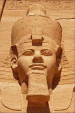
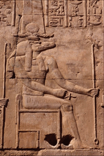
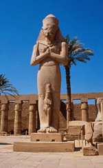

| Религии древнего Египта http://schools.keldysh.ru/school1413/religija/egypt.htm |
|  |  |  |
| Египет - греческие название страны Кем (на самом деле К’м, поскольку в древнеегипетском языке фонемы «е» нет). Смысл этого сакрального названия сейчас неизвестен. Древнегреческие путешественники отмечали труднодоступность получения знаний египтян для постороннего исследователя. Все знания можно было получать только в рамках храмового обучения. Причем процесс обучения носил ступенчатый характер, включающий посвящение в знание при переходе на следующую ступень обучения. Такие посвящения позволяли непосредственно переживать обретаемые знания, словесная сторона которых при формальном изучении может показаться либо скучной, либо путанной. Поэтому при изучении источников необходимо сопереживать их содержание и вместе с тем обладать смелостью непредвзятого взгляда.
Все что наверху подобно тому, что внизу - один из основополагающих принципов в Древнем Египте: закон подобия. Египет земной считался отображением Египта небесного. Местом единения считался Нетер. Причем Нетер мог пониматься как смысле состояния души, так и в смысле храмовых построек. Символически Нетер изображался в виде секиры. Пирамиды, в частности, являлись таким Нетером и отображали Дуат небесный на Земле. Дуат - царство Осириса. Согласно египетской Книге Мертвых (книге Амдуат) - именно здесь выносится окончательный вердикт душе умершего, если она смогла достигнуть Дуат. Иероглиф Дуат - круг со звездой в центре. Астрономически Дуат соотносится с районом звезды Ал-Нитак созвездия Ориона. Отображением этой же звезды является пирамида Хуфу. Таким образом, Мемфисский некрополь есть Дуат земной - отображение Дуата небесного. Остались также свидетельства, утверждающие, что Дуат земной находится в Мемфисе. Возникновение Дуата связывается с основополагающим сказанием Древнего Египта об Осирисе и Изиде. Любопытно, что хотя упоминаний об этом сказании огромное количество, до нас не дошло ни единого полного изложения. Осирис (грецизированная форма египетского имени Усир) - бог возрождения, царь загробного мира. Согласно упоминаниям в древнеегипетских текстах и рассказу Плутарха, Усир был старшим сыном бога земли Геба и богини неба Нут, братом и мужем Исиды, братом Нефтиды, Сета, отцом Гора. Он был четвёртым из богов, царствовавших на земле в изначальные времена, унаследовав власть прадеда Ра-Атума, деда Шу и отца Геба. Царствуя над Египтом, он отучил людей от дикого образа жизни и людоедства, научил сеять злаки (ячмень и полбу), сажать виноградники, выпекать хлеб, изготовлять пиво и вино, а также добывать и обрабатывать медную и золотую руды. Он обучил людей врачебному искусству, строительству городов. Злой бог пустыни, младший брат Усира - Сет, желавший править вместо него, придумывал способ погубить Усира. После возвращения из похода в Азию Усир устроил пир. Сет, явившийся на пир со своими 72 соумышленниками, велел внести роскошно украшений саркофаг и заявил, что тот, кто войдет в магический саркофаг будет править Землей и Небом. Когда очередь дошла Усира и он лег на дно саркофага (сделанного специально по его мерке), заговорщики захлопнули крышку, залили какой-то жидкостью и бросили саркофаг в воды Нила. Течением ящик прибило к берегу, и растущий там куст вереска охватил его своими ветвями. Верная супруга Усира - Исида нашла тело мужа, она извлекла чудесным образом скрытую в нем жизненную силу и зачала от мертвого Усира сына. Предав тело Усира погребению, она ушла в болота дельты Нила и там родила и воспитала младенца, названного Гором. Когда Гор вырос, он вступил в борьбу с Сетом. Анубис дает Гору Уджат - око ясновидения, око зрения души. Сначала он потерпел поражение и даже потерял в битве глаз - волшебное Око Гора, но затем счастье перешло на его сторону. Гор победил Сета, отобрав у него вырванный глаз, дал проглотить его мёртвому отцу. Усир ожил, но не захотел оставаться на земле, а, оставив трон на земле сыну Гору, стал царствовать и вершить суд в Дуате. По одной из версий сказания, Сет разрубил его тело на 14 частей (или 7) и разбросал эти части по всему Египту; Исида, собрав их воедино, погребла в Абидосе. Плутарх в трактате «Об Исиде и Осирисе» совмещает обе версии: Сет расправляется с Усиром дважды, что наиболее правдоподобно изначальному сказанию. По некоторым версиям, Усира оживлял не Гор, а Исида (сама или с помощью сестры Нефтиды). Погребение Усира приписывалось Исиде или Анубису. Анубис (Инпу) - проводник души сквозь темноту. При жизни он призван вести души сквозь тьму невежества, а после смерти был проводником души в Дуат небесный. Звезда Инпу также как и Звезда Исиды - Сириус, путеводная звезда. Земное отображение Сириуса - город Кхем (по-гречески Летополь). Этот город расположен строго на север относительно пирамиду Хуфу. Голова Инпу изображалась в виде головы постоянного спутника погребений - черного шакала. Весьма иронично то, что «Тексты Пирамид» были открыты именно при помощи шакала: один араб, увидев насмешливое выражение степной лисицы и последовав за ней, попал в его нору, а затем и в коридор пирамиды. Один из аспектов Инпу воплощался в боге Упуат. Форма Упуата трактовалась как ведущий, открывающий путь. В книге Амдуат в описании первого часа ночи Упуат помещен на носу ладьи миллионов лет. Ладья миллионов лет символизировала странствие души сквозь реку бесчисленных жизней и смертей. Путь земной - отражение пути небесного, пути сквозь Млечный путь, который египтяне называли вьющимся потоком. Одними из основных принципов в Древнем Египте являлись принцип перемен и принцип ритма, которые совмещаясь дают принцип цикличных перемен. А элементы ладьи Сектет, соответственно нос, корпус и корма образовывали семантическое единство с фазами космического цикла. В то же время как сама ладья символизировала способ преодоления этого непостоянства. По всей видимости в Египте не было единой религии. В каждом номе и городе был собственный пантеон богов. Но Великий пантеон богов в разных формах почитали везде. Эннеада - изначальная девятка богов, древнейшая известная нам космогоническая система. Атум символизирует первоначальное и вечное единство всего сущего. Согласно гелиопольскому сказанию, Атум, создавший сам себя, возник из первобытного хаоса - Нуна вместе с первозданным холмом. Сам себя оплодотворив, родил, выплюнув изо рта богов-близнецов воздух Шу и влагу Тефнут. Рука Атума - богиня Хатор (Небо). Двойная корона на голове означает власть над Верхним и Нижним Египтами. В Мемфисе Атума отождествляли с Птахом. Причем Птах, создавший богов, предварительно задумал свое творение в сердце и назвал их имена своим языком. Птах творил мыслью и словом. Появление детей у Атума влечет появление двойственности. Тефнут и Шу породили Геба - бога Земли и Нут - богиню неба, после чего Шу их разделил. Данная интерпретация полярности неба и земли особенность только египетской мифологии. Во всех других известных мифологических системах Земля имеет женское начало, а небо - мужское. Прежде чем Шу разъединил своих детей, у них родились Исида и Нефтида, Осирис и Сет. Каждый бог эннеады держит в правой руке символ жизни - анх, а в левой - символ власти уас. Причем мужские фигуры находятся в движении слева направо. Египетские верования во многих вариантах включали и высшую духовность и примитивные суеверия. Но интересна особенность того, что для одного могло представлять предмет концентрации, то для другого могло быть предметом беспокойства и страха в личной жизни. Это связано с тем, что даже самые абстрактные истины облекались во вполне конкретную форму. Обычно это были различные формы живой природы, всевозможные божества имели своих представителей в животном царстве. Поэтому в соответствии с мерой животного начала каждый египтянин видел в этих животных свой уровень проявления духовности. Постепенно средний духовный уровень приходил в упадок. Из-за этого нарушался баланс в почитании различных форм божеств. Все эти формы переподчинялись и смешивались в зависимости от географического центра правления. Их первоначальная духовная сущность терялась, а внешние проявления формы усложнялись. Из-за возникшей путаницы и сейчас невозможно точно определить, когда и в каком контексте встречаются упоминания известных имен. Предвидя это смешение, Эхнатон провел реформу на унификацию единого аспекта божества. Столица из Фив переместилась в новый город - Ахет-Атон, посвященная Атону. Но данная реформа была предана забвению. С приходом в страну варваров, точивших свои сабли о лица сфинксов, знания жрецов были спрятаны в самые разные системы закодированных знаков, например, в карты Таро. Но сейчас эти знания постепенно восстанавливаются и систематизируются. Может быть время разгадки тайны Сфинкса уже совсем близко? |